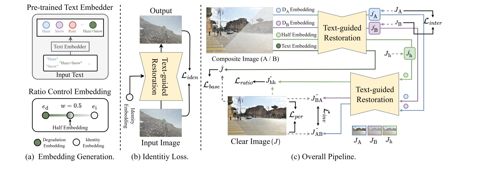
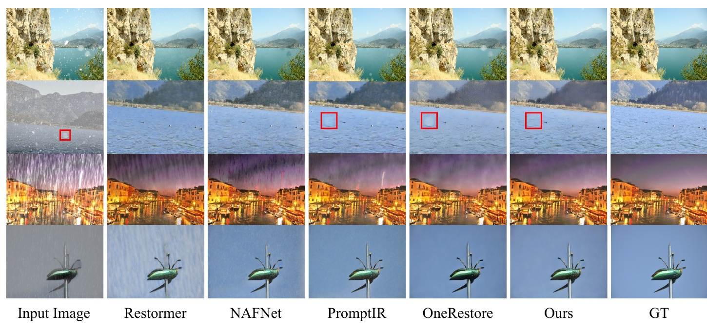

Preserve
An identity embedding explicitly tells the model when no restoration is needed.
Composite degradations are intertwined: removing one corruption can alter another, and processing order can change the result. CURE learns disentangled and adjustable representations so a single model can preserve the input, remove selected degradations, and continuously control restoration strength.
The presence of composite degradations poses a significant challenge, since the underlying corruption factors exhibit complex and interdependent interactions. Even when the degradation types are known, accurately restoring the image remains difficult due to the intertwined nature of their effects and the need for selective control during the recovery process. To address this, we introduce CURE, a unified framework that enables controllable restoration in complex degradation settings by learning disentangled and adjustable representations. CURE is driven by four complementary objectives. First, an identity embedding is incorporated, along with a reconstruction constraint, to ensure that the model can reproduce the input image when restoration is unnecessary. Second, the ratio control mechanism blends the identity embedding with degradation-specific embeddings using user-regulated mixing ratios, allowing continuous control over restoration intensity. Third, an intermediate loss supervises stepwise outputs, each encouraged to tackle only a single degradation factor within a composite mixture. Finally, a permutation-invariant loss produces consistent restoration quality regardless of the order in which multiple degradations are addressed.
An identity embedding explicitly tells the model when no restoration is needed.
A ratio-controlled embedding continuously adjusts how strongly a degradation is removed.
Intermediate supervision isolates individual corruptions inside complex mixtures.
Permutation-invariant learning keeps outputs consistent across restoration sequences.
Move the slider to inspect the exact ratio-controlled outputs shown in the paper.
The model removes part of the target degradation while retaining a controlled amount.
CURE isolates a requested corruption instead of blindly clearing the entire image.
Selective low-light enhancement should retain the snow component.
Sequential restoration should not depend on which degradation is removed first.
CURE produces closely aligned outputs across both processing orders.
CURE changes the training strategy, not the underlying restoration architecture.

Constrains the model to reproduce the input when restoration is unnecessary.
Interpolates identity and degradation embeddings for continuous intensity control.
Supervises partial outputs so each step removes only the requested degradation.
Aligns outputs from reversed restoration sequences for consistent behavior.
Figure 2 compares CURE with Restormer, NAFNet, PromptIR, and OneRestore across four complex degradation settings.

CURE with the OneRestore backbone on CCDD-11.
Average PSNR on CCDD-11
Selective restoration accuracy
Parameters
Average gap between restoration orders
Explore fifteen supplementary figures by experiment family. Open any figure for a full-resolution inspection.
Figures 5–19 from the paper supplementary material, grouped and loaded by experiment family.
CDD-11 was originally introduced with OneRestore. CCDD-11 follows its composite-degradation synthesis pipeline, then adds supervision pairs for removing each degradation factor individually. For example, a Low + Haze input is paired with a Haze-only target when removing Low and a Low-only target when removing Haze—enabling selective, partial restoration rather than only full recovery.
Download CCDD-11 on Hugging Face@inproceedings{kim2026cure,
title = {CURE: Controllable Unified Image Restoration for Complex Degradations},
author = {Kim, Boseong and Cho, Donghyeon},
booktitle = {International Conference on Pattern Recognition (ICPR)},
year = {2026}
}